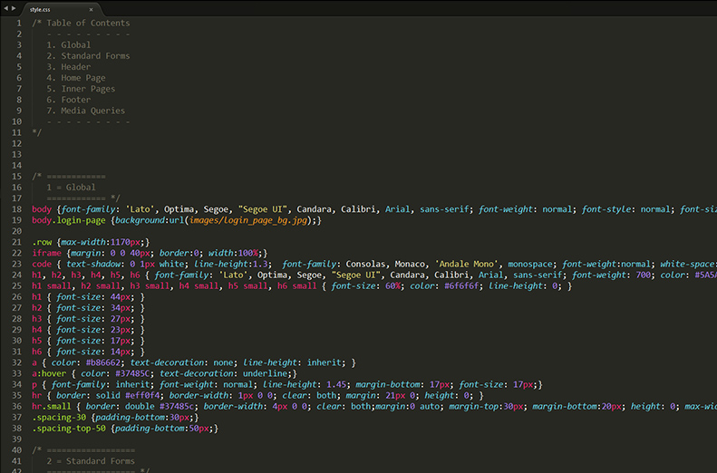
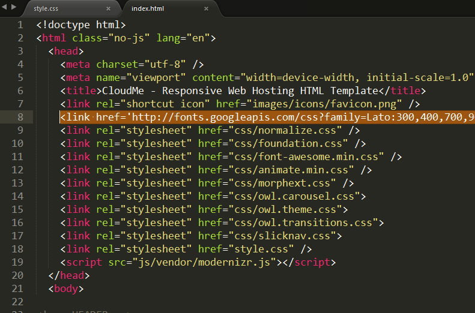
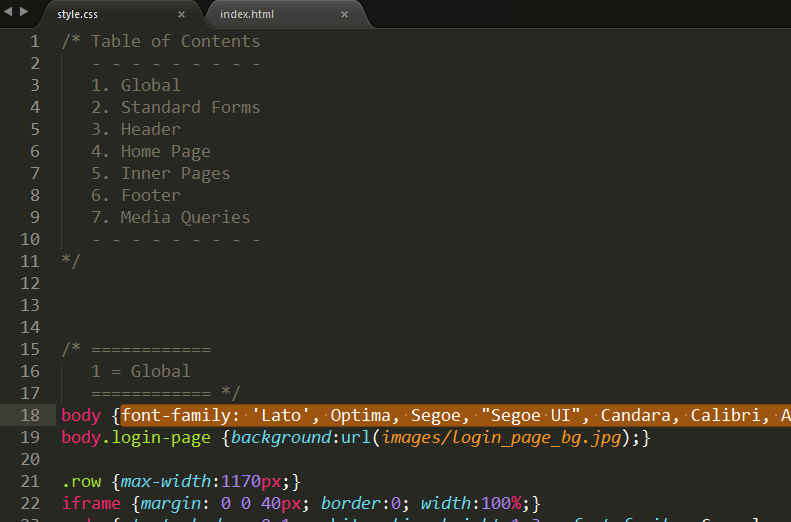
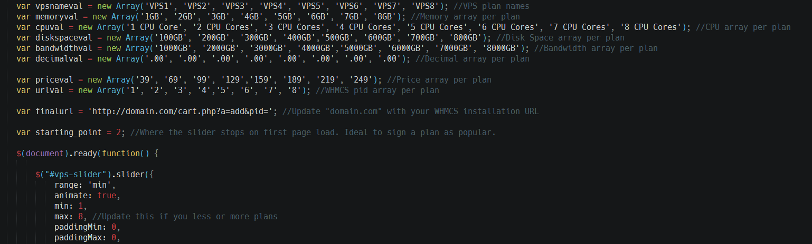

Thank you for purchasing the Compact HTML template.
How to get help:
We will respond to buyers' questions via the contact form on our profile.
We run support Weekdays 9am-5pm GMT+7. You can expect a response within 12 – 24 hours Monday to Friday. We’ll respond to questions outside of these times & weekends occasionally, but please don’t expect a response outside our stated hours.
Support requests are for:
- Help using templates
- Instructions setting up templates
- Bug reports and fixes
Support requests aren’t for:
- Help with 3rd party plugins
- Integration of 3rd party plugins
- Customizations of our templates
Thanks for your purchase!
The Compact template is a responsive HTML template based on Bootstrap. The structure based on a flexible grid that lets you change HTML pages quickly and logically with a nestable system.
If you would like to edit the layout of any elements in whole template, you would do the following:
Open the file /style.css, so that is extremely easy to change any css attributes. Simply find the related and commented heading in this css file and make your magic.

The font is Lato from Google Web fonts and if you like to change it with a usual web safe font (arial, verdana etc.) you must remove from
section of each page the line and also change the font-family class of various elements of file /style.css from font-family: 'Lato', Optima, Segoe, "Segoe UI", Candara, Calibri, Arial, sans-serif; to font-family: Verdana; (for example)

Compact using the following CSS files:
style.css
The main css file
css/animate.min.css
The main library for animation effects that you see on various pages.
css/font-awesome.min.css
The css file for font-awesome icons. To see all the available icons and instructions on how to use them click here
css/owl.carousel.css
The base stylesheet for carousels that the template using (testimonials in home page, carousel with fade effect in datacenter page, one item carousel in blog category)
css/owl.theme.css
The stylesheet that define the appearance of carousels. You can change saome things, for examople the color/size of pagination bullets.
Compact using jQuery framework with various additional plugins. Also, there are all the js files of Bootstrap framework (in folder /js/) in case that you want to use them.
js/bootstrap.min.js
The main js file that hook the supported scripts of Bootstrap framework
js/jquery.js
The jQuery framework
js/modernizr.js
Modernizr gives you finer control over the experience through JavaScript-driven feature detection. You don't need to touch anything here.
js/owl.carousel.js
The script for carousels that the template using (testimonials in home page, carousel with fade effect in datacenter page, one item carousel in blog category). The hook of the script for each page exists in js/custom.js file on line 39.
js/waypoints.min.js
The script that hooks the number counters when the specific section is in vewport. You don't need to touch anything here.
js/masonry.pkgd.min.js
The script that generates the masonry layout in testimonials page.
js/wow.min.js
The script that using for animations (in combination with animate.min.css) while scrolling the page
Just separate the words/phrases with comma(,).
Number counters has been defined by its id (for example ). You can define each number counter by its id in js/custom.js (sections = // ______________ DISCOUNT NUMBER - CALL TO ACTION ON HOME PAGE and // ______________ LOVED BY DEVELOPERS NUMBER - CALL TO ACTION ON HOME PAGE). Define where to start (prop=0), where to end (number:) and the seconds that this counting takes until the end.
Edit style.css file and change the .top class. Replace in this specific class the position:absolute with position:fixed
Go down to Media Queries and add the following jsut below of @media only screen and (max-width: 719px) {
.top {position:relative; z-index:0}
You can do this, by using "wow" class and the class for the specific animation.
For example : <div data-wow-delay="0.2s" class="wow zoomIn">
- the "wow" class hooks the animation when the specific div is in viewport
- the "zoomIn" class is the animation effect. You can see the effects taht you can assing here : http://daneden.github.io/animate.css/
- the data-wow-delay="0.2s" is a variable that we can assing to define the time that the specific div displaying.
It is in sendmail.php, line 17 ($site_owners_email=)
Just go to to javascript code in the bottom of the page and define accordingly. See the screenshot for more info

Just save the 3 video formats (mp4, ogv, webm) that you found in video zip in the /video folder, and update the paths(source src=) in index-video.html that start on line 140.
You can download them from :
1) http://www.smashingmagazine.com/2014/06/19/freebie-ballicons-2-icon-set-png-psd-svg/
2) http://www.smashingmagazine.com/2014/05/27/summer-essentials-icon-set-freebie-eps-png-ai/
you can download and use them to your projects (Creative Commons 3.0), unfortunately we can't bundle them with the template because the redistribution is prohibited.